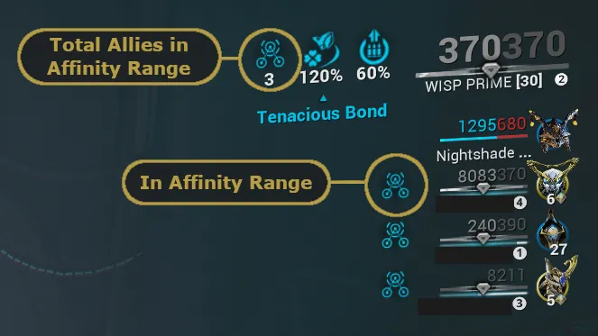
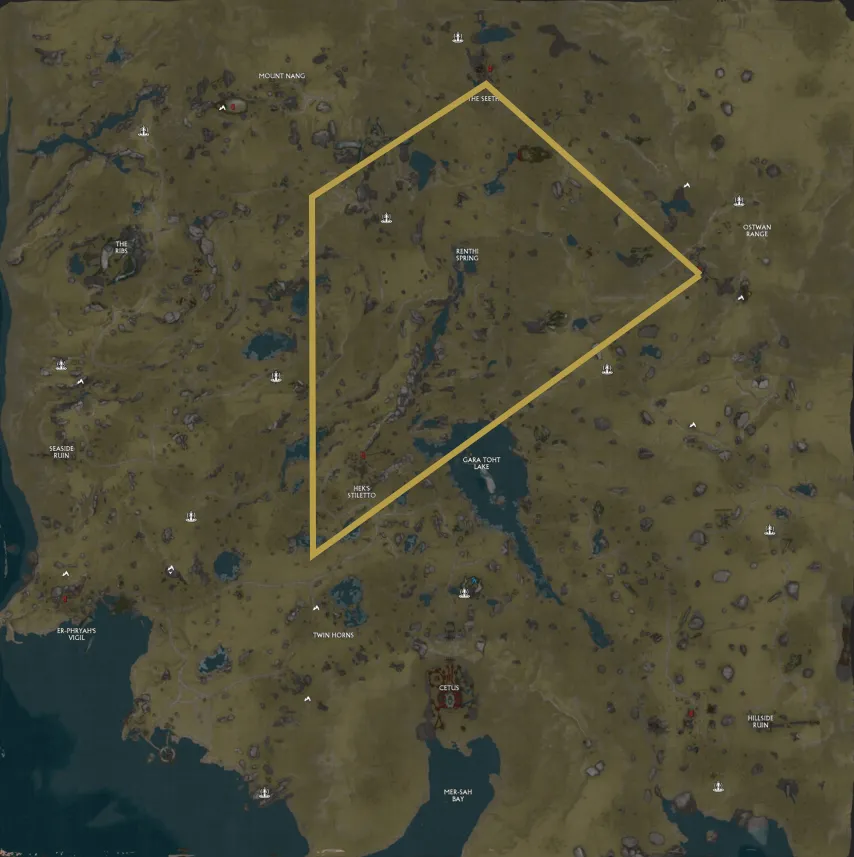

Affinity Farming
Table of Contents
Overview
Affinity is Warframe's 'experience' system for leveling up your Warframes, weapons, companions, and more.
When an enemy is killed, affinity is distributed to each player based on multiple rules focused on how the kill happened and where players were. Additionally, affinity is not shared from a single pool. Each player earns their own affinity independently, so kills are never "stolen."
The 4 most common rules you'll encounter are:
- Warframe ability kill: 100% of the affinity goes to your Warframe
- Weapon kill: 50% goes to your Warframe and 50% goes to the weapon that got the kill
- Ally kill (within affinity range): 25% goes to your Warframe, 75% is split evenly across all your weapons
- Ally kill (outside affinity range): 0% of the affinity goes to you
Note: It does not matter if the Warframe or weapon is maxed out, it will still collect affinity based on these rules.
Affinity range is the area around a player that grants other allies affinity when the player gets a kill. It is typically 50m, but can be extended by Fosfors or Vazarin's Mending Unity passive. Allies in range will have an affinity symbol next to their name.
{kind=link}

General Affinity Farms
Running regular missions and passively leveling will always be a viable option, but here are some missions, locations, and tips that can help speed up the process.
Grineer Defense (Galleon Tileset)
- Helene on Saturn and Hydron on Sedna are both solid early places to level up your gear.
- No requirements
- Can level both weapons and Warframes here
- Enemies on Helene can also drop Orokin Cells
Sanctuary Onslaught
- Unlocked after The New Strange quest
- Affinity starts slow but scales up with stages
- Can level both weapons and Warframes here
Elite Sanctuary Onslaught
- Unlocked after The New Strange quest
- Requires Rank 30 frame (until MR 30+ when it changes to just needing 1 forma)
- Good option for leveling weapons
Smeeta Kavat
- Smeeta's Charm can give a +300% affinity buff randomly
- Works well in conjunction with general affinity farms and the SP elara method below to reduce farm time
Plains of Eidolon Stealth Farming
Key Points
- Requires archwing and either the Nataruk or a strong hitscan sniper
- Utilizes stealth affinity multipliers for big affinity gains
- Not required but strongly suggested: Aero Vantage and any '+X sec aim glide' mods
How to Run
Step 1. Adjust your loadout
- Unequip your melee
- Equip either a Nataruk or a high damage sniper
- Equip Aero Vantage and any aim glide duration mods you have
- Add the Archwing launcher to your gear wheel
The goal is a weapon that can one-shot enemies from range and a Warframe build that lets you float in the air for an extended period of time. Pictures below show an example 0 forma Nataruk build and the recommended Warframe mods (priority: Aero Vantage > Aerodynamic > aim glide duration mods).
{kind=link}
Step 2. Adjust your visibility settings
Go into Settings, search "enemy highlights", turn it up to max, and set the color to white.
{kind=link}
Step 3. Run the mission
Here's a map of the route I recommend starting with. Once you're comfortable, you can move to a different or larger loop.
This farm works by 'freezing' the enemy AI, so that they cannot react and you can land multiple stealth kills from range. Repeated stealth kills give you an affinity multiplier per kill which stacks up to 500% bonus affinity.
To freeze the enemy's AI you'll need to be far enough that they are just visibly showing up. To do so you will:
- Hop into archwing
- Fly high up
- Find a camp (If there are no enemies move closer, if they're moving move further up/away)
- Wait 2-3 seconds once enemies freeze (otherwise you can sometimes lose the multiplier)
- Hop out of archwing (melee key) and aim to float in air
- Shoot the enemies. Clear the first camp to stack up your stealth multiplier, then only kill Eximi units in the other camps
- After the enemies die, hop back into Archwing and repeat steps 3-7 until maxed
{kind=link}

Here's the video guide I personally used. If you're a visual learner and want an in-depth guide, this does a great job. The link starts at the example run but the whole video covers the mechanics discussed above.
Plains of Eidolon Leveling by NoSympathyyCA
Steel Path Elara
Key Points
- Requires Railjack Command Rank 9 (On-Call), a strong AOE weapon (ideally the Kuva Zarr), and access to Steel Path
- Utilizes crewmate damage scaling and affinity mechanics
- Ideally a solo or duo strategy. Larger parties will take longer if leveling Warframes.
- Great for leveling Warframes (if solo) or weapons (with 2 or more players)
How to Run
Step 1. Buy a crewmate from Ticker in Fortuna. You want a crewmate with high stats in Combat and Endurance. The perfect crewmate would have 5 Combat, 5 Endurance, and the "+150% Critical Chance with Rifles" perk.
Step 2. Get a strong AOE weapon like the Zarr or Ogris. I recommend the Kuva Zarr for its damage and large splash radius (see example build below).
Note: Rivens, galvanized mods, and conditional arcanes do not apply to crewmate weapons, so consider making a dedicated config for your crewmate.
Step 3. Assign the crewmate as your on-call and equip the Kuva Zarr (or your chosen weapon) as their loadout. Then add the on-call crew summon to your gear wheel.

Step 4. Collect party members as needed. If running solo, bring a strong backup weapon. Crewmates only last 3 minutes before going on a 7 minute cooldown, so you will need to hold out for the remaining 2 minutes of the survival.
Step 5. Start the mission, hack the console, and stand by the door or gate based on your spawn location.
Step 6. Once enemies spawn, summon your crewmate and set them to hold position. If running as a duo, stagger your on-call summons so that when one expires, the other is ready to be summoned.
Step 7. Extract at 5 minutes or when maxed.
Top{kind=link}